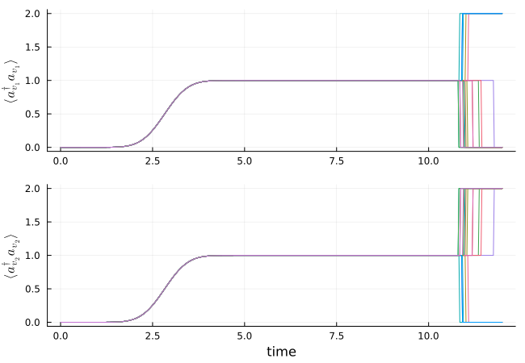

Hong-Ou-Mandel Effect
In this example, we simulate the Hong-Ou-Mandel effect, where two single photons in identical temporal modes impinge on a 50/50 beam splitter, which leads to bunching of the photons into one output port. We perform Monte-Carlo wave function trajectories which show this behavior.
using QuantumInputOutput
using SecondQuantizedAlgebra
using QuantumOptics
using Plots
using LaTeXStrings
using LinearAlgebra# symbolic Hilbert space and operators
hu1 = FockSpace(:u1)
hu2 = FockSpace(:u2)
hv1 = FockSpace(:v1)
hv2 = FockSpace(:v2)
h = hu1 ⊗ hu2 ⊗ hv1 ⊗ hv2
au1 = Destroy(h, :a_u1, 1)
au2 = Destroy(h, :a_u2, 2)
av1 = Destroy(h, :a_v1, 3)
av2 = Destroy(h, :a_v2, 4)
# symbolic parameters
@rnumbers gu1 gu2 gv1 gv2 t r# input cavities, beam splitter, and output cavities
S_bs = [r t; t -r]
G_u1 = SLH(1, gu1' * au1, 0)
G_u2 = SLH(1, gu2' * au2, 0)
G_in = G_u1 ⊞ G_u2
G_bs = SLH(S_bs, [0, 0], 0)
G_v1 = SLH(1, gv1' * av1, 0)
G_v2 = SLH(1, gv2' * av2, 0)
G_out = G_v1 ⊞ G_v2
G = G_in ▷ G_bs ▷ G_outH = hamiltonian(G)\[-0.5 i gu1 r gv1 a_{u1} a_v1^\dagger -0.5 i t gu2 gv1 a_{u2} a_v1^\dagger -0.5 i gu1 gv2 t a_{u1} a_v2^\dagger + 0.5 i r gv2 gu2 a_{u2} a_v2^\dagger + 0.5 i gu1 r gv1 a_u1^\dagger a_{v1} + 0.5 i t gu2 gv1 a_u2^\dagger a_{v1} + 0.5 i gu1 gv2 t a_u1^\dagger a_{v2} -0.5 i r gv2 gu2 a_u2^\dagger a_{v2}\]
L = lindblad(G)
L[1]\[gu1 r a_{u1} + t gu2 a_{u2} + gv1 a_{v1}\]
L[2]\[gu1 t a_{u1} -1 r gu2 a_{u2} + gv2 a_{v2}\]
# Gaussian input mode (two single-photon pulses, u1 = u2)
γ_ = 1.0
T_p = 1 / γ_
T_end = 12T_p
σ = sqrt(0.5) * T_p
u(t) = 1/(sqrt(σ)*π^(1/4)) * exp(-(t - 4σ)^2 / (2*σ^2))
T = [0:0.002:1;] * T_end
ΔT = T[2] - T[1]
# time-dependent couplings for input and output modes
u1 = u
u2 = u
gu1_t = coupling_input(u1, T)
gu2_t = coupling_input(u2, T)
v1(t) = u(t)
v2(t) = u(t)
gv1_t = coupling_output(v1, T)
gv2_t = coupling_output(v2, T)
dict_p_t = Dict(gu1 => gu1_t, gu2 => gu2_t, gv1 => gv1_t, gv2 => gv2_t)
# beam splitter parameters (50/50)
η = 0.5
r_ = sqrt(η)
t_ = sqrt(1 - η)
dict_p = Dict([t, r] .=> [t_, r_])# numeric basis
bu1 = FockBasis(1)
bu2 = FockBasis(1)
bv1 = FockBasis(2)
bv2 = FockBasis(2)
b = bu1 ⊗ bu2 ⊗ bv1 ⊗ bv2
au1_qo = destroy(bu1) ⊗ one(bu2) ⊗ one(bv1) ⊗ one(bv2)
au2_qo = one(bu1) ⊗ destroy(bu2) ⊗ one(bv1) ⊗ one(bv2)
av1_qo = one(bu1) ⊗ one(bu2) ⊗ destroy(bv1) ⊗ one(bv2)
av2_qo = one(bu1) ⊗ one(bu2) ⊗ one(bv1) ⊗ destroy(bv2)
# translate to numeric operators
H_QO = translate_qo(H, b; parameter = dict_p, time_parameter = dict_p_t)
L_QO = [translate_qo(Li, b; parameter = dict_p, time_parameter = dict_p_t) for Li in L]
function input_output(t, ρ)
Ht = H_QO(t)
J = [L_QO[1](t), L_QO[2](t)]
return Ht, J, dagger.(J)
end# time evolution
ψ0 = fockstate(bu1, 1) ⊗ fockstate(bu2, 1) ⊗ fockstate(bv1, 0) ⊗ fockstate(bv2, 0)
time, ρt = timeevolution.master_dynamic(T, ψ0, input_output)# output observables
n_v1 = real.(expect(av1_qo' * av1_qo, ρt[end]))
n_v2 = real.(expect(av2_qo' * av2_qo, ρt[end]))
g2_v1 = round(real.(expect((av1_qo')^2 * (av1_qo)^2, ρt[end])) / n_v1^2, digits = 4)
g2_v2 = round(real.(expect((av1_qo')^2 * (av1_qo)^2, ρt[end])) / n_v1^2, digits = 4)
v1_v2_coinc =
round(real.(expect((av1_qo' * av1_qo) * (av2_qo' * av2_qo), ρt[end])), digits = 4)
@show g2_v1
@show g2_v2
@show v1_v2_coincg2_v1 = 1.0
g2_v2 = 1.0
v1_v2_coinc = 0.0We can see that the two-photon correlation for each port is one and that the correlation between the two ports is zero.
In the following, we show Monte-Carlo wave function simulations to show the bunching of photons into one of the two output ports in each realization. To this end, we collapse the photon number at the end of the time evolution ($t > 0.9 T_{end}$) with the photon detection operator in each output mode $a^{+}_{v} a_{v}$.
R = 1 # collapse rate
n_v1_coll(t) = (t > 0.9*T[end])*R*av1_qo'av1_qo
n_v2_coll(t) = (t > 0.9*T[end])*R*av2_qo'av2_qo
function input_output_mc(t, ρ)
Ht = H_QO(t)
J = [L_QO[1](t), L_QO[2](t), n_v1_coll(t), n_v2_coll(t)]
return Ht, J, dagger.(J)
end
Ntraj = 20
n_v1_mc_ls = [zeros(length(T)) for i = 1:Ntraj]
n_v2_mc_ls = deepcopy(n_v1_mc_ls)for it = 1:Ntraj
t_mc, ψt_mc = timeevolution.mcwf_dynamic(T, ψ0, input_output_mc)
n_v1_mc = real.(expect(av1_qo' * av1_qo, ψt_mc))
n_v2_mc = real.(expect(av2_qo' * av2_qo, ψt_mc))
n_v1_mc_ls[it] = n_v1_mc
n_v2_mc_ls[it] = n_v2_mc
endp1 = plot()
for it = 1:Ntraj
plot!(p1, T, n_v1_mc_ls[it]; label = "")
end
plot!(p1; ylabel = L"\langle a^\dagger_{v_1} a_{v_1} \rangle", grid = true)
p2 = plot()
for it = 1:Ntraj
plot!(p2, T, n_v2_mc_ls[it]; label = "")
end
plot!(p2; xlabel = "time", ylabel = L"\langle a^\dagger_{v_2} a_{v_2} \rangle", grid = true)
plot(p1, p2; layout = (2, 1), size = (650, 450))
We can see that both photons always go together into one of the two detectors.
Package versions
These results were obtained using the following versions:
using InteractiveUtils
versioninfo()
using Pkg
Pkg.status(
[
"QuantumInputOutput",
"SecondQuantizedAlgebra",
"QuantumOptics",
"Plots",
"LaTeXStrings",
],
mode = PKGMODE_MANIFEST,
)Julia Version 1.12.6
Commit 15346901f00 (2026-04-09 19:20 UTC)
Build Info:
Official https://julialang.org release
Platform Info:
OS: Linux (x86_64-linux-gnu)
CPU: 4 × AMD EPYC 7763 64-Core Processor
WORD_SIZE: 64
LLVM: libLLVM-18.1.7 (ORCJIT, znver3)
GC: Built with stock GC
Threads: 4 default, 1 interactive, 4 GC (on 4 virtual cores)
Environment:
JULIA_PKG_SERVER_REGISTRY_PREFERENCE = eager
JULIA_DEBUG = Documenter
JULIA_NUM_THREADS = auto
Status `~/work/QuantumInputOutput.jl/QuantumInputOutput.jl/docs/Manifest.toml`
[b964fa9f] LaTeXStrings v1.4.0
[91a5bcdd] Plots v1.41.6
[18f9eda6] QuantumInputOutput v0.1.0 `~/work/QuantumInputOutput.jl/QuantumInputOutput.jl`
[6e0679c1] QuantumOptics v1.2.6
⌅ [f7aa4685] SecondQuantizedAlgebra v0.4.5
Info Packages marked with ⌅ have new versions available but compatibility constraints restrict them from upgrading. To see why use `status --outdated -m`This page was generated using Literate.jl.